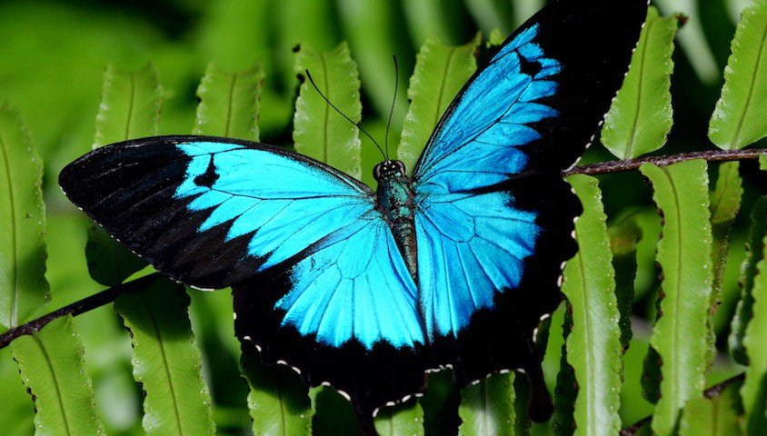

music of the week: the musmus' prologue
length: 21:38
genre: pop punk, emo rock
- 1. baptisma
- 2. バイナリ
- 3. silent finale
- 4. アネモネの庭
- 5. mass hysteria
- 6. x-day
- 7. ユリシス
favorite track - バイナリ / binary
second favorite track - baptisma
buy on google play or on cdjapan.
The musmus (fka uplift spice) is a japanese rock band that's been active since 2005, when they formed as uplift spice. they broke up and reformed as the musmus around 2014. their music tends to be very catchy and high-energy (as a lot of japanese music tends to be), and the voice of chio, the lead vocalist, is one of the most unique I've ever heard. it may be an acquired taste.
the musmus has been going through some stuff recently, so I don't blame them for being slow to release new music. however, I've been thirsty for some
musmus recently so I had to revisit some of their older releases — namely the musmus tale I and of course prologue.
track one - baptisma.
baptisma is a really, really good start to this album. the guitar intro is catchy — and then chio's piercing voice cuts through the distorted midrange of the guitar and drums like an aural dagger. the main attraction in this one, I think, is the bridge. the uniqueness of chio's voice really stands out in those intense sections. the chorus is very nice as well, but it's not as attention-grabbing as even the first vocal line.
I do admit, though, that the lyrics make no sense to me right now. at all.
track two - バイナリ / binary.
in contrast to the first track, binary brings a lot more to the table during the chorus than during the verses. also, the little on-off guitar riff at the beginning (and throughout) feels very 'binary', don't you think?
as for the lyrics, they confuse me. perhaps it's a song about trying to get along with someone who's very different from you?
曖昧な君の答えと
your ambivalent answer, and
相対す想いのバイナリ
the binary of our respective feelings,
精細プログラミング
details in programming.
君は煽動されてく mine
you've been incited — you're mine.
I my me 口を切る迄
I my me - until I break the silence,
I my me 解析 バイナリ
I my me - analyzing the binary...
it's possible that I'm taking it too literally. I'm not particularly good at analyzing the meaning of lyrics, especially when those lyrics are not in my native language.
track three - silent finale.
the third track is a sad sounding song with lyrics that seem to tell a story of death. or maybe it's about persevering during hardship?
羽ばたこうした 空さえ堕とすのなら
trying to fly, even if I fall from the sky
私は地を這う鳥にもなろう
I'll become a bird that crawls along the ground
...
静かな灯、 それさえ砕くのなら
a silent light, even when it's broken,
明日も手放した、夜にもなろう
let go of tomorrow, and become the night.
it's a pretty glorious song, overall. reminds me of my chemical romance's mama for some reason.
track four - アネモネの庭 / anemone garden
anemone garden shows a much softer side of chio's voice. it's a very peaceful, somewhat melancholic-feeling song. it's about...I'm not sure. I gather that it's about loss, however. one of the meanings of anemone flowers is loss of a loved one, and that's the general idea that I got from the lyrics. something about the song feels like grieving a loss.
枯れてゆけ、やがて世界はモノクロ
withering away...eventually the world becomes monochrome
涙の雫、悲しみに染めた色など
teardrops, colors dyed in sadness
not a very upbeat song. but a good one!
track five - mass hysteria.
track five brings some contrast to the preceding track, and picks up the pace again. the repetitive guitar riff that plays at the end of the chorus creates a feeling of being on edge, which is augmented by the lyrics. very fitting for a song called 'mass hysteria'.
群がれ恐怖へ、デスダンス
to the fearful swarm, death dance
死神と、デスダンス
with a shinigami*, death dance
陽炎に、デスダンス
in the haze of heat, death dance
果てるまで、デスダンス
until the end, death dance
the lyrics remind me of a phenomenon that occurred in the middle ages called dancing mania, during which large amounts of people would dance until they collapsed,
and often died. there are multiple recorded instances of this happening. it is the single most insane thing that I've learned about in the past few weeks.
track six - x-day.
x-day is a decidedly more peaceful song than mass hysteria. I think it's about finding out that someone is not really who they seem to be. so, another slightly sad song. I like it, but it just isn't as interesting as the other tracks for
some reason.
track seven - ユリシス / ulysses
a ulysses, or papilio ulysses, is a type of australasian butterfly. the song specifically talks about an 青いバタフライ — a blue butterfly, so I assume they're talking about the gorgeous blue variant.
this sounds like another melancholy song, this time about bittersweet memories. chio sings in past-tense about someone who once gave her a blue ulysses, and she remembers them and feels hope whenever she sees the butterfly.
君がくれた幸せのユリシス
you gave me a happy ulysses butterfly,
僕は毎日諦めていた
I was resigned to everyday life.
...
栞にした四つ葉のユリシス
I turned that ulysses butterfly into a bookmark,
本を開くたび未来を
and so whenever I opened that book,
信じてみたいと思えた、君が僕に勇気もくれたから
I saw a future I think I want to believe in, because you gave me the courage
also, the acoustic guitar in this song is really pretty.
around the time this song was written, the population of the ulysses butterfly was dramatically declining. not really related to anything, but interesting!
It was really hard to pick a favorite track on this album. I've listened to it between fifteen to twenty times this week (it's very short and very good), and I keep cycling between baptisma, anemone garden, and binary as my favorites.
silent finale and mass hysteria are really strong too, and ulysses...and x-day is definitely one of my favorites...hmm, oh well.
thanks for reading. I listen to music like, sixteen to twenty hours per day and I've collected over six hundred digital albums over the past five years — amounting to twenty-two days, fifteen hours, and forty-nine minutes' worth of music! I plan to keep writing posts about music, so hopefully you'll keep reading these and maybe I'll introduce you to your new favorite artist!
however, I will try to make sure most of the music I post about is relatively un-talked about (at least on my side of the web) — meaning if there are already tons of posts about an album, I'm not going to add to the noise. I will
focus on providing information where it's lacking.
notes:
*shinigami, a spirit that invites humans to death. maybe dancing mania was caused by a particularly aggressive shinigami.
**literally until I cut my mouth, a japanese idiom meaning 'to break the ice' or 'break the silence'.